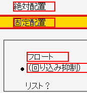
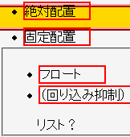

2003-04-23修正。この挙動は仕様通りの動作です。
絶対配置（position: absolute;）／固定配置／フロート状態にした要素はdisplayプロパティが強制的に「block」に設定されるが、li要素にこのような指定を行ってもリストマーカーが消えない。
<style type="text/css">
li {
border: 2px solid red;
margin: 2px;
}
</style>
<ul>
<li style="position:absolute; width:5em; left:3em; top:1em;">絶対配置</li>
<li style="position:fixed; width:5em; left:3em; top:3em;">固定配置</li>
<li style="float:left; width:5em;">フロート</li>
<li style="clear:left;">（回り込み抑制）</li>
</ul>
<div style="display:block; margin-left:40px; list-style-type:circle;">リスト？</div>
絶対配置と固定配置にしたli要素はページ左上端に配置しています。末尾のdiv要素は、 display:block; を明示した場合にリストマーカーを表示できるかを試しているものです。
Opera7.0での表示（標準モード）
Moz1.0.2での表示（標準モード）
CSS2.1では、displayプロパティがlist-item値の要素はフロート化してもlist-item値のままであると定義されています。このため、リストマーカーが消えないのが正しいことになります。
冗長な指定になりますが、ブロックタイプであることを明示するかリストマーカーのスタイルを明示すればこのバグを回避できます。
<ul> <li style="float:left; width:5em; display:block;">フロート</li> <li style="float:left; width:5em; list-style:none;">フロート</li> <li style="clear:left;">（回り込み抑制）</li> </ul>
Moz1.0.2/1.2.1では標準・互換モードともに不具合の発生が確認されました。CSS2.1に準拠した動作です。